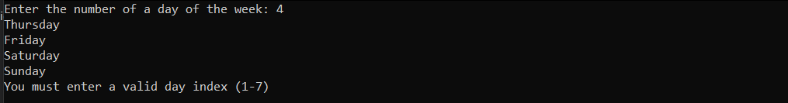
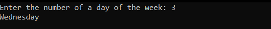

A scope is a section of a C++ program, which has the following semantics:
The if-else operator is used to branch the execution of a program into several possible pathways, depending on a boolean value
Long syntax
if(condition) {
statementsIfTrue;
} else {
statementsIfFalse;
}
Short syntax
if(condition) {
statementsIfTrue;
}
The block operator is needed only if the enclosed statements are more than 1
Example
The ternary conditional operator
predicate ? valueIfTrue : valueIfFalse
Example
Consider the following code fragment
It could be rewritten as
Which is more readable and straightforward
Wait... What?
The switch statement's default behaviour is to execute all following cases after it meets a match.
To prevent this, we use the break control statement
A break statement tells the compiler that we are done executing statements within the switch, and that execution should continue with the statement after the end of the switch block.
This time we get the desired behaviour
C++ allows defining our own data types. Perhaps the simplest one is enum.
An enumerated type (enum) is a data type where every possible value is defined as a symbolic constant.
Each enumerator is assigned an integer value, starting from 0
Example
Switch and enums
That was it :)